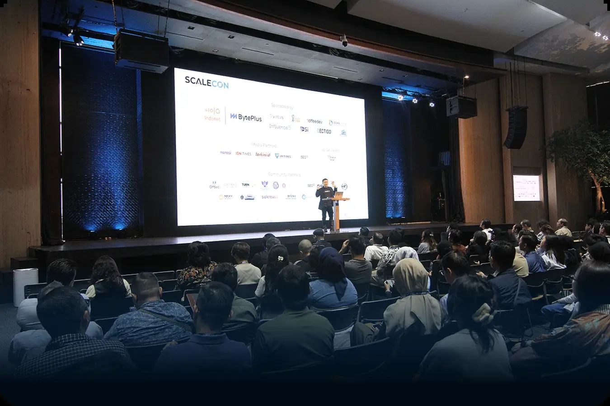

Conferences · AI
SCALECON Jakarta 2027
- Dates
- Venue
- Telkom Landmark Tower, Jakarta
- Location
- Jakarta, Indonesia
- Format
- In-person
- Category
- AI
- Industry
- Artificial intelligence
- Organiser
- SCALECON
- Expected attendance
- 1,200
- Official website
- https://scalecon.ai/
About
Dates are local Indonesia dates (Jakarta/Yogyakarta WIB UTC+7; Bali WITA UTC+8).
Topics: AI, generative AI, AI security, automation.
Official: "Attendees in 2025 & 2026: 1,200+ business leaders and professionals".
Sources
- Official — https://scalecon.ai/
- Previous listing (Scalecon about page) — https://scalecon.ai/about